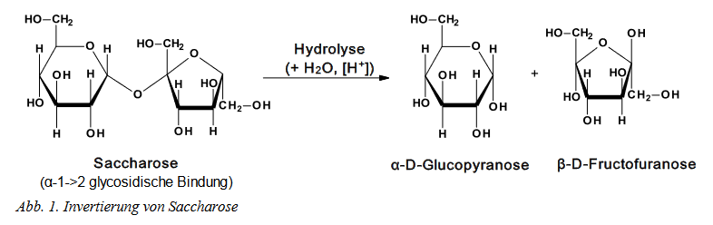
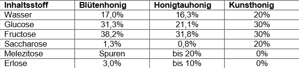

Nach den zwei Versuchen stellen wir uns natürlich die Frage, warum wird es (in meinem Fall zwar nicht*, aber dennoch) dickflüssig?
Ganz einfach: Fructose und Glucose reagieren bei Hitze zusammen (bspw. im Wasser) zu Saccharose, welches ein Zweifachzucker ist. Der handelsübliche Zucker ist (laut Chemie.de) Saccharose. *Der Industriezucker, den ich verwendet habe ist es anscheinend nicht. Deswegen ist der Versuch nicht so gut ausgefallen. Aber kommen wir zurück: Diese Saccharose spaltet sich dann durch das Wasser und den hinzugefügten Fruchtzucker, durch die Zitronen, in Glukose und Fructose, welches bei dem "normalem" Honig durch Enzyme passiert.
 Dadurch wird dann das Wasser-Zucker-Gemisch (eigentlich) Dickflüssig. Der Geschmack kommt von den Zitronen, dem Zucker und den Gewürzen. Die Farbe vom Schwarztee.